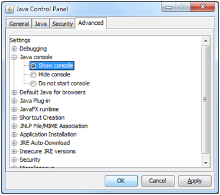
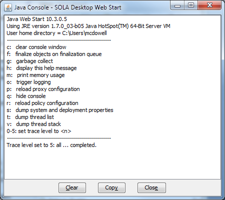

From time to time you may encounter unexpected issues while trying to run Registry. Usually the error message will recommend a course of action, but occasionally you may encounter a technical issue that requires further investigation by the IT Support Team or another Registry technical person. To assist that investigation you may be asked to provide a copy of the log files supporting Registry. The logs capture exception information and status messages that can help a technical person to determine the cause of a particular issue.
This section describes the two types of logs available with Registry; the RegistryApplication Logs and Java Runtime Environment (JRE) logging. It also describes how to access information from those logs
Each Registry Web Start application (i.e. Registry Desktop and Registry Admin) creates an application log file on your local computer to capture exceptions and various status messages. You can find those log files at the following directory location <User Home Directory>/sola/logs.
The name of the log file will be DesktopApplication_<date>.log (for Registry Desktop) or AdminApplication_<date>.log (for Registry Admin). Simply open the appropriate log and copy the text from the log file into your email reply or issue ticket.
Note that your <User Home Directory> will depend on the operating system of your computer. For example, under Windows Vista and Windows 7 this will be C:\Users\<Your Windows User Name>.
Registry is a Java application and the Java Runtime Environment (JRE) also provides a detailed logging capability. The advantage of using JRE Logging is that every exception and/or status message is reported whereas the Registry Application Logs only capture Registry specific exceptions and messages and may not necessarily capture the true cause of an issue.
JRE Logging is not turned on by default. You need to use the Java Control Panel to turn on the Java Console which can then be used to turn on JRE Logging as required. To turn on the Java Console and JRE Logging.

Java Control Panel Advanced tab

Java Console with logging turned on
Be aware that JRE Logging will only be turned on for the duration of your current session. If you restart the Registry Web Start application, JRE Logging will be turned off until you set the logging level in the Java Console.